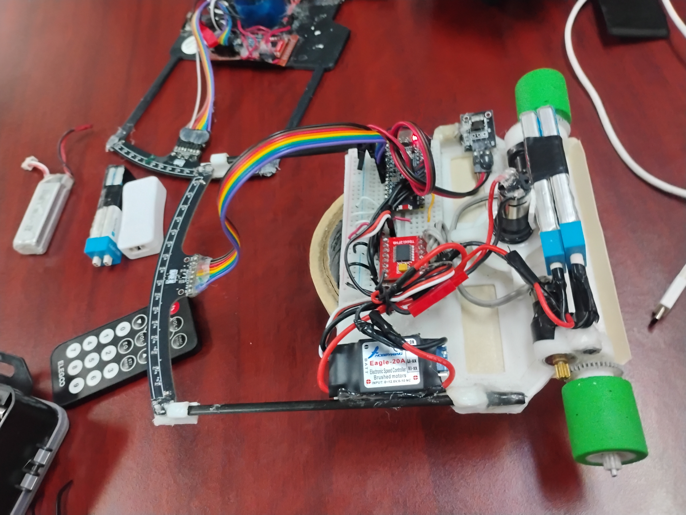

Características del robot
Estas son las piezas y caracteristicas que tiene el Super Follower V3, buscando mejorar el desempeño en las competencias.

- ESP32-C3Microcontrolador que procesa la información.
- Puente H TB6612Driver que entrega hasta 10A! a los motores.
- Pila de 7.4 Vpilas de alta potencia para el mejor rendimiento.
- Motores coreless N60Motores ligeros y de respuesta rápida.(50,000RPM)
- Llantas de 25 mm a 10k rpmTracción para recorrer la pista a alta velocidad.
- Sensor multiplexado x16Dieciséis puntos de lectura para ubicar la línea.
- Turbina de 32 mmAyuda a que el robot se mantenga pegado a la pista.